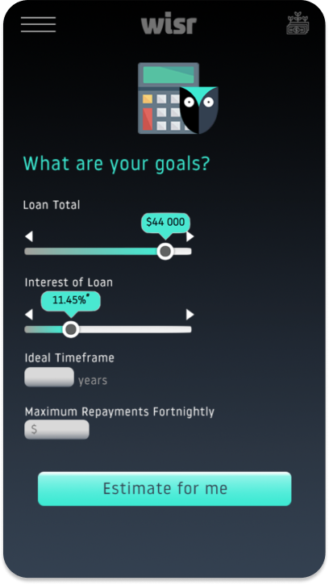
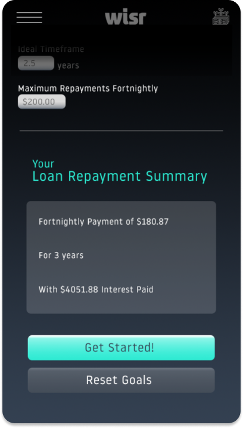
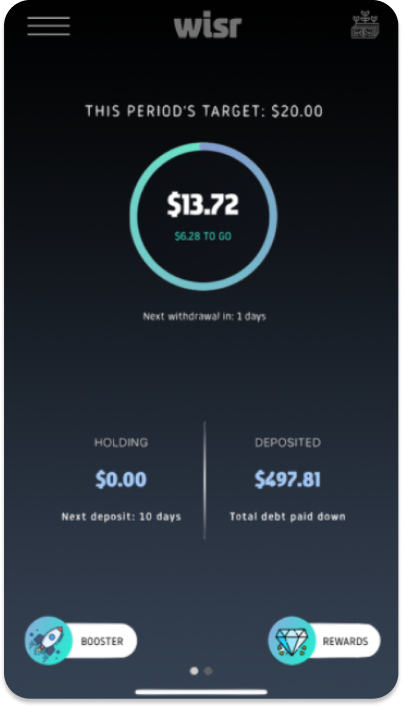
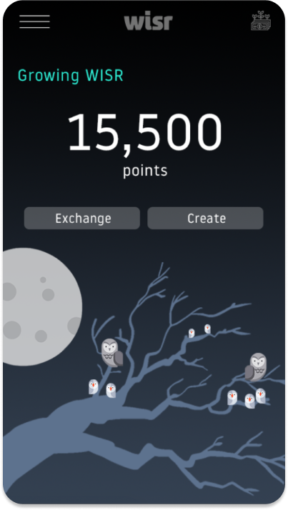

Wisr Spending
A wiser way to spend.

The Company
Wisr is Australia's only ASX listed (ASX: WZR) neo-lender and a fintech pioneer in the rapidly growing Australian consumer finance market. Their purpose is to help everyday Australians access smarter and fairer credit, when it comes to their personal finances. Specifically, their Round Up feature aims to help Australians pay off their debt by using the gains from rounded up daily purchases.
The Problem
The Round Up feature fails to help customers save and accrue large sums of savings and consequently has insignificant impact on their ability to pay down their debt.
How can you help Wisr customers collectively pay down $100M in debt in the next year?
The Solution
We introduce two new features: WISR Spending & Rewards.
The Solution
Introducing: WISR Spending & WISR Rewards.
WISR Spending
Encourages smarter debt repayments by featuring a fixed loan calculator in the Wisr app to help clients meet planned debt repayment goals easier.
WISR Rewards
A rewards program that boosts customer retention through a point-based system for monetary repayment back into client accounts.
Wisr Spending

- Credit Card/WISR Loan total
- Credit/WISR Loan interest rate
- Ideal timeframe
- Maximum repayments fortnightly


- The virtual ecosystem continually evolves as the user gains and claims points. As the ecosystem grows over time, the page will become a fulfilling, visual representation of how much the user has repaid.
- However, for customers who fail to repay, owls will instead start to fly away.

Impact
Our reward system is purposed to both provide support and incentivise consumers to repay their loans. The fact that you can exchange your points into dollars to pay off your loan, will really attract and encourage consumers with positive reinforcement. Also WISR’s app uses gamification and visual stimulation to elicit a feel-good response to consumer’s efforts of paying down debt. Now WISR can guide Australians down a stress-free and secure path to financial wellness, becoming the new leader in consumer lending for Australians.